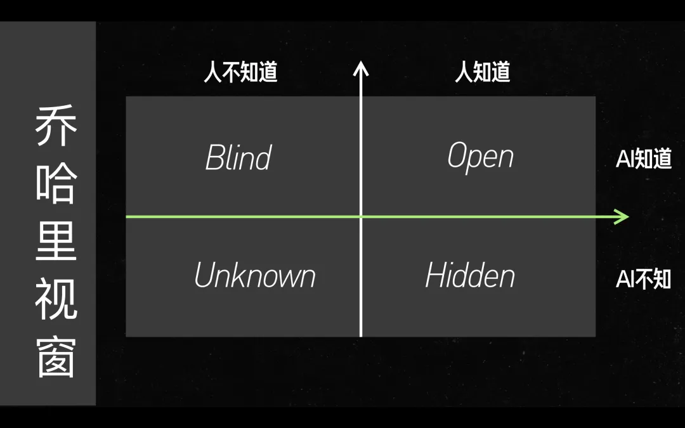

Zine#22
Hi，又是新的一周了~
上周发生了件有点郁闷的事情，自行车丢了。
从家走去地铁站要几分钟，为了快点就买了辆 400 来块的凤凰牌自行车，因为开关锁麻烦，后来我干脆不锁车了，用了好几个月都没事。
上周有个早上出门，发现自行车找不到了，几天了也没人骑回来，估计是丢了。
虽然当时不锁车也做好了会丢准备，但真的丢了还是有点郁闷，没想到我这么破的自行车都有人要偷。╮(╯_╰)╭
新的一年，希望我能定期更新吧，而不是总是拖更。
阮老师总是在周五更新，每个周五定期看看周刊还挺开心，看看那些新奇的事情。
我尝试在周一更新吧，毕竟周一那么难受，来点咨询或许可以解解闷~
新的一期周刊也是很多内容，希望你看得开心！
关于周刊如果有什么建议，欢迎留言啦~
Best wishes~ ｡:.ﾟヽ(*´∀`)ﾉﾟ.:｡
News | Article
Kakizome, Japanese way of new-years resolution
作者介绍了一个日本的习俗： “书き初め”，即在新年之初写用书法写一两个字，表达对新的一年的寄望。
新年伊始写的第一幅书法作品，通常是书写自己在这一年中立下的志向或抱负。
文章中分享的一个方法我觉得很不错，与其为一年设定很具体的目标，不如给这一年一个主题，例如健康年，读书年。
相比每天跑 5 公里这样的目标，健康年是一个更宽泛的目标，你不一定要跑步，去游泳，力量锻炼，健走，合理饮食也是达成健康的方法。
宽松一点的主题会减少挫败感，只要总体趋势是朝着主题走的，那就问题不大。
几年前，CGP Grey 提出了用新年主题取代新年决心的观点。
与其说「我要每周至少读一本书」，不如说「这是阅读的一年」。
与其每周在健身房锻炼 X 天，不如「健康年」。
理由是「当你想把自己打造成更好的自己时，精确的数据点并不重要。只有趋势线才重要」。
我喜欢这个原则。我认为「书き初め」的传统就包含了这一理念。
在穿越未来的迷雾时，这是一个更好的指南。
新年愿望就像「地图上的道路」，而主题就像指南针。
对于我们中的许多人来说，未来的一年可能并不那么容易预测，或者会突然出现一些障碍。
过时地图上的道路不如指南针有用，当我们走到一个路口或突然发现障碍时，指南针至少能给我们一个方向。
每周在健身房锻炼 3 天，或者把能跑马拉松作为新年愿望，但一个月后就弄伤了膝盖？
如果你的主题是锻炼或健康，没问题，你可以适应它。
如果是决心，现在你必须在上面勾掉「失败」二字，否则待办事项清单上的另一个项目将无法完成。
Everything Must Be Paid for Twice
学校应该教授的一门理财课是，我们买的大多数东西都要付两次钱。
首先要付出代价，通常是美元，只为获得想要的东西，不管是什么：一本书、一个预算应用程序、一辆独轮车、一捆羽衣甘蓝。
但是，为了利用这个东西，你还必须付出第二个代价。这就是为获得其利益所需的努力和主动性，它可能比第一个代价高得多。
成本除了金钱，还有时间，精力等。所谓 “时间就是金钱”，人在这个世界上最缺的就是时间了吧，时间不会增长，只会一直减少。
我相信，这就是我们的现代生活方式有时会让人感觉有点自我挫败的原因之一。
在我们寻求满足的过程中，我们不断地支付第一笔价款，同时也相应地欠下了巨额的第二笔价款。
然而，任何购买的回报–也就是我们购买的理由–在付清第一笔钱和第二笔钱之前都是被锁住的。
…
这种稀缺感造成了我们难以承受的第二价格债务的主要副作用之一：我们会条件反射地过度沉迷于娱乐和其他低第二价格的享乐–手机应用程序、流媒体服务和加工食品–尽管它们的回报往往只比什么都不做好一点。
这些东西很吸引人，因为它不费吹灰之力（而且我们为支付这么多第一价格而工作，已经很累），但它会占用大量时间，进一步消耗第二价格预算。
就像买东西会贪便宜一样，对于“第二价格”也会贪便宜，相比那些费力费时的活动，更愿意去做那些轻松不用脑子的活动，但这样反而让可用的“第二价格”越来越少。
有的东西，拥有但不用就得不到它带来的价值，作者提出减少拥有和获取，更多地去使用和享受已有的东西。
作者甚至更极端一点，给自己设定了一年的时间，不允许拥有新的爱好，设备，游戏或书籍，必须从已经拥有的东西或已经开始的事情中找到价值。（有种消费降级的感觉）
付出第二份代价，虽然听起来令人不快，但这是一个可以让你尝到甜头的过程，当你尝到甜头时，你会感到非常兴奋。
这就像在没有地图的荒野中跋涉–速度很慢，会被很多东西绊倒，但一路上都是新的领域，在最初的不适之后，你会觉得自己很有活力。
然后，当你从另一边走出来时，这块新领地已经成为你惯常活动范围的一部分，而你也变得更坚强、更有趣了。
想出如何付出第二个代价并不难。你只需要注意到你通常会想放弃的那一刻，并坚持下去，而不是去做别的事情。
换句话说，当你碰到杂草时，你是进入而不是离开它们。
吉他上笨拙的 B 大调和弦–无论如何都要让手指到位，看看能否再放松一点。
伊斯梅尔滔滔不绝地讲述历史上的鲸鱼图画–试着去理解为什么这对他很重要。
正是在这些陌生的时刻，收获才会显现出来。
付出“第二价格”不容易，似乎只能强迫一下自己坚持。
To make some good progress, you just need to overcome a bit of laziness at the beginning every time 😉
— Anthony Fu 🦋 @antfu.me (@antfu7) July 10, 2023
新的一年也可以试试作者的做法，从已有的东西寻找价值，而不是追求拥有更多。
Start Presentations on the Second Slide - by Kent Beck
在公司听过一些技术分享，也做过分享。
分享者会在一开始先讲很多概念，为了后续的内容铺垫，但是往往不那么有趣，就无法吸引听众的注意力，听的人容易分神。
我自己也分享过关于 shell 脚本的使用，会后有个同事跟我反馈，建议我一开始先介绍 shell 脚本能做什么炫酷的事情，然后再解释如何写，而不是一开始先讲语法。
技术演讲需要设置一些背景，然后提出要解决的问题。
不过，如果演讲者按照这个顺序进行演讲，那么演讲的开头就会出现一些听众已经知道的信息，而其他听众则没有任何动力去尝试理解。
应用章节交换技术。(先放出有趣的，有悬念的内容）
已经了解相关背景的听众愿意坐下来听，以便找到谜底。
而没有了解过背景的听众则会很感兴趣，从而集中注意力。
程序员有一种巴甫洛夫工程反应。
向他们提出一个问题，他们就会开始尝试解决。
确保第一口就让他们口水直流，让他们有机会在你的演示过程中共同参与工程设计。
然后，你就可以解释问题的其余部分和你的绝妙解决方案，因为你知道他们和你在一起。
Mr.Beast 的视频制作经验中也提到，视频开始的的部分往往是最重要的，最开始那 1 到 3 分钟，是吸引观众，留住观众最好的时机。
假设视频的开头光线不好，我没有达到点击诱饵的预期，我没有提前计划我要说的话，我们也没有在内容的第一分钟放一些有趣的东西，那么我们损失的人数就不会超过 2100 万。因为它甚至不会获得 2100 万的观看次数，哈哈。
在内容的前一分钟之后，我们将进入我们所称的第 1 到第 3 分钟。这是你需要从炒作过渡到执行的地方（通常）。
停止告诉人们他们将要观看什么，开始展示给他们看。
我们会使用的一个 1 到 3 分钟的策略是疯狂的进展。
假设我们有一个关于一个人在森林中生存了几周的 10 分钟视频。
与其像一个合乎逻辑的电影制作人那样将视频的前 3 分钟讲述他的第一天，然后再逐步推进，我们会尝试在视频的前 3 分钟内覆盖多个日子，这样观众就会对故事产生极大的投入。
他们已经看到这个人在森林中生存了好几天，情感上现在想看看他还能走多远。
我们还想在 3 分钟左右做一些叫做 3 分钟重新吸引的事情。
重新吸引可以被描述为与故事高度相关且让人真正印象深刻的内容。
在这个时候重新吸引观众是很重要的，因为他们可能会对故事感到厌倦并点击离开。
等下次需要分享的时候，试试这个技巧(≖ᴗ≖๑)
李继刚：当我们说「提示词」时，到底在说什么？
这三种定义本质上是在做什么？如果有一个词能把它们全部罩住的话，那个东西是什么？
是「我」。
因为这三个东西本质上都是「我有一个想法」「我有一个观点」「有一个方法论」「我有一个东西想要表达出来」，这里边全是「我」。
但是，我在跟谁对话？对面是谁？
但是我在这两年和大模型对话过程中，有一个鲜明的感觉，我的身体、我的情绪、我的一切告诉我，它不是个物件。但它是生命吗？我觉得它不是。
怎么定义它的这种状态呢？
我找了一个词，哲学上讲的「存在」，我觉得它是一个存在，它不是生命，也不是物件，但它是个非常特殊的存在。
什么样的存在呢？
大概是这么一个画面，它是一片神经元之海。
当我开启了一次对话，输入一段提示词进去之后，里面会涌现出一个东西来迎接我，你可以把它想象成一个客服人员或者一个智能体。无所谓，反正有那么一个东西冒出来。
这个东西就是我们这次对话的对象的那个存在，当我把这个对话内容给删除，这次对话消失的时候，它就湮灭了，它回到了神经元之海。
当我新开一个对话的时候，另外一个存在冒出来了，跟之前的它已经不是同一个存在了。
这就回答了我之前遇到的困惑——为什么我有时候跟它的对话非常顺畅，我再重开的时候想复现就很难，因为生成的这个已经不是之前的它了。
人类的宇宙是什么？是我脑海中的认知宇宙。
AI 的宇宙是什么？是参数宇宙。
现在这两个宇宙要产生交流，这个交流的宇宙语，我们把它定义为提示词。
有了这个认知，我们就可以去琢磨宇宙语怎么发挥作用？我如何写才能让它变得更好呢？
有一个公式会很自然地冒出来， 就是在一个场域中，把人类认知宇宙中的认知结构和大模型做一次交流对话，这个公式有三个要素：场域、大模型、人类的认知。
- 场域
- 一个交流的空间，这个空间内让大模型理解我想做什么，让它留出一定的发挥空间。通过 prompt 引导 LLM 脱离默认的训练结构/参数，使得 LLM 能够更自由地发挥，从而得到更有趣的结果，少一点 AI 味。
- 人类的认知
- 意图/任务，个人的理解、定义、方法论、喜好、偏好、文风。
{kind=link}

- 在人类知道和 AI 知道的 Open 这个象限中，只需要简单去说，效果会很好。
- 对于人类知道 AI 不知道的地方，应该展开说，提供足够的上下文，如知道的信息、背景、味道、结构放进去，效果就会变好。
- 随着时间发展，AI 知道的会越来越多
- 下面两个象限的空间会变小，上面两个空间的象限会变大，而如果做的事情是针对下面两个象限的，那么可发挥的空间就会越来越少
- 由于 AI 知道的更多，需要给 AI 的背景可能也会越来越少，prompt 也可以更简单
- 得益于于 AI，人能知道的可能也会变化
- 有人可能利用 AI，知道的更多，理解更深入
- 有人可能完全依赖 AI，不去主动思考，理解变粗浅了
New Front-End Features For Designers In 2025
2025 年了，有什么可用的浏览器特性？通过这篇文章可以大致了解一下。
Node.js Now Supports TypeScript By Default
NodeJS 23 默认支持 TypeScript 了。
see also: Node’s new built-in support for TypeScript.
Web page annoyances that I don't inflict on you here
作者的观点就是让网页保持干净，没有各种弹窗，按钮，动画，跟踪，我也比较赞同作者的做法，博客也会尽可能这么做。
作者说的东西，一个简单的静态网站基本上都能满足。
BTW，如果你想体验一下那些糟糕的网站有多糟糕，可以试试：
我也比较了一下我做到的和没做到的
[ ]我不会强迫人们使用 JavaScript 来阅读我的东西。- 博客还是有一些 JS 的，但是禁用了也不影响看内容，无非是评论，主题，搜索不能用。还有一些引用的 iframe，twitter 估计也看不到。我确实应该考虑一下如果用户不使用 JS 的话，一些内容应该如何保证可见性。
[ ]我不会强迫你使用 SSL/TLS 连接。想用就用，用不了也没关系。- 这个我没做配置，如果你用 HTTP 访问，会重定向到 HTTPS。
[X]我不会通过在帖子页面中运行脚本来跟踪 “参与度”，因为同样没有 JS。- 原来会用不蒜子，看见网站的访问量，后来看其实访问量也不多，懒得追踪了= =
[X]我不设置 cookie。我也不发送唯一值，如 Last-Modified 或 ETag，这些值也可用于识别个人身份。[X]在过滤滥用的情况下，我不会使用访客 IP 地址。- 博客暂时还没碰到类似问题，也没做相关配置
[X]我不会在任何地方弹出窗口。你不会看到有什么东西打断你的阅读，要求你 “订阅” 并提供你的电子邮件地址。[X]我不使用自动播放视频或音频。- 我有插入一些音乐和视频，不过我不会设置自动播放。
[X]当你退出一个页面时，我不会试图 “抓住你”说“在你走之前，看看这个其他的东西”。[X]我不会通过隐藏日期来假装文章常青。所有文章都在页眉和 URL 中注明了明确的日期。如果过期了，会很明显。- 页脚有文章的更新时间。
[X]我不会在页面上放垃圾，让你滚动时 “跟着你” 往下看。你还想看我的标题吗？酷，如果是一篇特别长的文章，你可以向上滚动。我不会在页面顶部保留一个 “dick bar” 来提醒你在哪个网站上。你的浏览器已经帮你做到了。- 原来我是有固定 nav bar 的，但是点击 footnote 的时候，nav bar 可能会遮盖，后来就移除了。
[X]没有浮动按钮，上面写着 “联系我”、“付钱给我” 。我不会把内容模糊化，迫使你点击某些东西才能继续浏览。简而言之，我不会掩盖内容。[X]我不会在浏览器中扰乱页面滚动。你不会从我的任何操作中得到半吊子的 “平滑” 尝试。你也不会因为切换了标签页而被拉回到顶部。[X]当你向下滚动页面时，我不会使用半吊子水平 “进度条”。如果是图形浏览器，你的浏览器可能已经有一个这样的“进度条”了。[X]我不会在页面上乱放图标，这些图标自称是用来 “分享” 或 “喜欢” 某篇文章的，但其实经常是用来给某项服务的母站打电话，报告某人（即你）在某处浏览了某个页面。- em…这个我用了 giscus，确实会有一些“喜欢”按钮，但也不是为了跟踪你的，只是想收到一些回应。
[X]我不使用 “隐形图标” 或其他垃圾追踪器。你不会发现邪恶的 1x1 或诸如此类的东西。当你加载这些帖子时，没有人会被跟踪。[X]我不会在滚动时分段加载页面。它只加载一次，然后你就可以阅读了。如果之后断开连接，你仍然可以阅读全部内容。[X]我不会在帖子中添加没有 ALT 或附带文字的图片，这样做的目的是为了向那些因各种原因无法看到图片的人（有很多人）描述图片的内容。- 这块有待提升，早期写的文章都没有留意，现在我都会补充 alt 或者写 caption。(@see: Alt Text: Not Always Needed)
[X]我不会对 “外向链接” 做什么邪恶的事情来报告哪些链接被访客点击了。指向 example.com 的链接只是 <a href="http://example.com/">blah blah blah</a> 没有添加任何有趣的内容。没有添加跟踪参数（tracking_args）或其他类似的废话，如果我在我想在这里使用的东西上发现了这些参数，我就会把它们去掉。如果你点击了某个链接，那是你和你的浏览器之间的事，我不会知道。反正我也不想知道。我也不会去管它是在标签页、新窗口还是其他什么地方打开。- 由于写周刊，有很多外部链接，我都是直接引用，如果上面有一些跟踪的参数，我也会移除。
[X]我不会为了建立某种 “跟踪” 你的 “档案” 而通过其他网站和/或域对你进行重定向。[X]我不会在我的文章底部或其他任何地方放上 “您可能会对……感兴趣” 的空洞和误导性的点击诱饵。[X]我的网页实际上是有底部的，而且它不会移动。如果你点击 End 或滚动到底部，你会看到我的页脚，仅此而已。它不会为了 “吸引你” 而把更多废话塞进去。就是这样。如果你想读更多的东西，那完全取决于你，你可以点击查看。[X]我不会因为有人浏览了我的文章而赚一分钱。你也不会发现有什么可怕的公司在我的网站上投放广告。事实上，我每个月都要花费一大笔钱（一直如此）来维持网站的正常运行。我偶尔会卖出一本书，偶尔会收到 “请我喝杯茶或吃顿午饭” 之类的邀请，我很感激这些。- 我也不会投放广告，但确实想过博客是否能够给我带来一点收益，请我喝杯咖啡之类的，hh。不过维护它的钱并不需要很多。
[ ]我敢肯定，作为我的一篇文章的一部分加载的所有内容都来自同一个源头，即 http[s]://rachelbythebay.com/ 什么的。帖子中 “内联” 的少量图片（如 feed 图标或桥梁图片）、声音、CSS 和其他内容都不是来自其他地方。你并没有通过某种“相信我，我是海豚” 式的第三方 “CDN” 服务 “留下痕迹”。你连接到我，提出要求，我就提供。很简单。- 由于周刊的缘故，有的图片/视频是引自别的网站的，还无法做到所有内容到时来源于我当前域名的
My approach to running a link blog
哈哈，作者说的 link blog 不就是周报吗，分享一些自己看到的链接。
感觉作者很多建议，和我目前做的也很像。
作者给的几点建议挺好，以后我也会尝试一下。
- 如果我能找到链接内容的创作者，我总是会注明他们的名字。这对我自己也很有用，因为我以后可以搜索某人的名字，找到我过去链接过的他们创作的其他有趣内容。如果我链接了某人的作品三次或三次以上，我也会尽量注意并将其升级为专用标签。
- 我试图增加一些额外的东西。我写链接博文的目的是，如果你同时阅读了我的文章和原文，你就会获得比只阅读原文更好的体验。
- 这也是我应该加强的部分。
- 我喜欢引用。找到并引用一个能抓住文章关键主题的段落，是一种非常快速有效的总结方式，可以帮助人们决定是否值得阅读整篇文章。
- 同感！！
- 理想的情况是，即使你不关注链接本身，我也希望你能从中获得一些有用的东西。这可能是一个略显棘手的平衡点：我不想抢走作者的注意力，也不想剽窃他们的信息。一般来说，我会尽量找到一些值得强调的关键观点。略带玩世不恭的是，我可能会试图捕捉这一观点，以防原文来源从互联网上消失。链接腐烂是真实存在的！
- 这点我做的不是很好，有时摘抄的有点多
- 我最基本的做法是提供背景资料，说明我为什么认为这件事值得一读–这对较长的内容尤为重要。
- 我可能会将它与其他类似的概念结合起来，包括我过去写过的东西。
- 如果部分材料是视频，我可能会引用一段文字记录。
- 我链接的很多内容都涉及编程。我经常会使用 GitHub 的功能，直接链接到相关代码，这样我就可以链接到特定提交的代码片段。
- 我补充一个：可以利用 Linking Directly to Web Page Content，链接到文章对应的文本，便于读者查看
- 如果原作者读了我的文章，我希望他们能感觉良好。我从自己的经历中了解到，当你在网上发表文章时，沉默往往会震耳欲聋。知道别人阅读、欣赏、理解并分享了你的作品，会让人非常愉快。
- 我有一个略显自我的顾虑，那就是我喜欢证明我读过这本书。这与其说是为了别人，不如说是为了我自己：如果我自己没有读过某本书，我就不喜欢向别人推荐，而在细节上标明我读过第一段，有助于让我保持诚实。
- 我开始更多地使用屏幕截图，甚至是视频或音频短片。截图可以被视为一种视觉引语。
Be aware of the Makefile effect
Makefile effect 说的是一种现象：当一个新的工程需要类似的 makefile 时，往往会从以前的项目中 copy 一个过来修改，而不是重头编写。
然而，在设计阶段，这表明工具设计存在缺陷：该工具（或系统）使用起来过于复杂（或令人烦恼），无法从头开始使用。
用户不是从头开始使用它来解决问题，而是反复复制一个已知有效的解决方案，并随着时间的推移逐渐增加更改。
评论有个人总结的也挺精辟：
这只是一个简单的复制/粘贴错误，加上了一点盲目崇拜。
我在一些项目开发中也会这样，例如一些 API 请求封装，错误处理，日志处理等，我也是从之前的项目中复制过来，然后基于当前项目需要调整。
但其实原来的配置可能并不是我写的，里面如何设计的其实我了解的并不多，合不合理，是否存在问题，都没有深思过。
这样的做法，某种程度上我觉得是便利的，快捷的，每次都重头写，处理各种边缘场景似乎也不太合适。
但是以后要提醒自己，即使是复制，也应该看一遍代码逻辑，检查一遍是否存在问题，或者有没有更好的做法。
A Three Month Review of Kagi Search & The Orion Web Browser — FlatFootFox
作者使用 3 个月 Kagi 的体验总结。
最近我也订阅了 Kagi，5 美元的 Plan，因为有搜索次数限制，所以搜索的时候还是会存在一些犹豫，怕浪费了搜索额度。
目前还没有超过额度，计划是自由的用，先看看自己正常的使用额度是多少，如果真的很多，或许会考虑再升级。
为搜索服务付费的一个好处是，搜索服务不需要给你投放广告，跟踪你的访问来获取收益，所以相对来说应该会得到更好的搜索体验。
而且 Kagi 可以对搜索的内容进行权重设置，从而减少那些不喜欢的网站出现。
Kagi 将自己描述为“以用户为中心的搜索”。您直接为他们提供的服务付费。
这有两个显著而直接的影响：Kagi 不需要向您展示广告，他们的搜索必须是好的。
没有广告总是能带来愉快的浏览体验。正如有线电视一再证明的那样，付费服务和广告并不是完全不相容的。
然而，目前 Kagi 很高兴成为越来越少的互联网绿洲之一，在你每次与之互动时并不积极试图向你推销什么。
这在隐私方面有很大的好处。因为你是客户而不是产品，Kagi 不需要将广泛的监视和跟踪技术集成到他们的工具中。
他们不记录搜索，不将搜索与您的账户关联，甚至用简单的英语说明他们使用的 5 个 cookie 的意图。
If GPUs Are So Good, Why Do We Still Use CPUs At All?
一篇解释 CPU 和 GPU 差异的文章，里面的视频挺有趣的。
因为 GPU 有许多小内核，因此可以同时处理相对简单的计算，例如计算屏幕中每个像素点的变化。
而 CPU 核心没有那么多，对于并行任务，能够同时处理的核心就没那么多，所以像是图形绘制，CPU 会更慢一些。
但是 CPU 能处理 GPU 无法处理的复杂逻辑，各有优劣，不可或缺。
一般来说，CPU 更适合顺序程序，而 GPU 更适合并行程序。
CPU 有少量的大内核，而 GPU 有许多小内核。
Barcelona bus route removed from map apps to tackle tourist overcrowding
巴塞罗那的一条公交路线挤满了游客，导致本地居民都很难坐上车。
通过将公交路线从 Google 地图上移除，没有游客知道这条路线，现在居民可以独享了。
反映出来的是如今的人是多么依赖网络和数字世界，假如有一天地球网络消失了，路上的汽车会不会少很多，毕竟没有 GPS，说不定很多人都不认识路。
想起在 Zine#13 分享过的 Let Google Decide，作者住的地方不在 Google 地图上，当他们在更新网地址的时候，他们输入了住的街道，却被提醒“街道不存在”，导致无法进行下去。
我们的生活似乎在很大程度被网络/一些大型公司所“主宰”。
Good, Fast, Cheap: Pick 3 or Get None
开发的时候，由于工时紧，需要快速实现，而采取了一些不那么好的实现，这样的事做多了，就会积累很多技术债务。
但是作者提出，应该优先注重质量，质量差，以后就需要花更多的时间弥补，尽管短期看是开发更快，但长期看反而更慢。
为此，可以从两方面去保证质量：
- 写简单的代码
简单代码的第一步就是希望代码简单。
并非每个人都希望代码简单，这往往是因为对灵活性的错误假设。
但是，简单的代码能让一切变得更好：它更容易优化，更容易测试和修正，编写和维护也更快。
要知道，解决问题最简单的办法很少是最先想到的办法。
在短期内，最便宜的办法是这个办法，而不是最简单的办法。
不久前，我确实以权宜之计为名，试图匆忙采用显而易见的方法。虽然成功了，但却在几周内拖慢了开发进度。
John Ousterhout 建议，要想接近最简单的解决方案，应该设计两次。
尝试几种不同的解决方案，看看哪种最简单。
顺便说一句，这可能会帮助你想到另一个更简单的解决方案。
- 足够的，良好的测试
好的测试套件能快速运行并捕捉到所有错误，这让我可以轻松无畏地重构代码。这有助于我在添加新功能时保持代码简单。
如何科学躺平
- 保持健康，锻炼，注意饮食
- 理性消费，减少负债
- 多看书，独立思考
- 学好英语
- 用好 AI，提高自己
道理都懂，行动更重要。
Mistakes engineers make in large established codebases
作者总结了一些在大型代码库工作的容易出的错。
所谓“大型代码库”，作者指的是：
- 个位数百万行代码（比方说 ~5M）
- 大约有 100 到 1000 名工程师在同一个代码库中工作
- 代码库的第一个工作版本至少已有十年历史
但其实我觉得，对于那些迭代了好几年的项目也是适用的。
我经常看到一个错误，它绝对是致命的：忽略代码库的其他部分，只以最合理的方式实现自己的功能。
换句话说，就是限制与现有代码库的接触点，以保持代码的干净整洁，不受遗留垃圾的污染。
对于主要负责小型代码库的工程师来说，这很难抗拒。
但你必须抵制它！事实上，为了保持一致性，您必须尽可能深入到遗留代码库中。
维护历史代码的时候，可能看到原来的写法很烂，自己写的时候就想着用更新的语法，自以为更好的写法去重新实现，而导致了和原来实现的不一致。
不一致多了，就会导致代码库越来越混乱。
在原来逻辑能用的情况下，应该优先保持一致性，而不是另造轮子。
不过有的代码本身写的有问题，在完全了解的前提下，也可以考虑一下重构。
其他的一些建议还有：
- 充分了解服务的实际使用情况再做修改
- 坚决杜绝引入新的依赖关系
- 如果有机会删除代码，请务必抓住机会
你应该知道如何在 “遗留的混乱” 中工作，因为这就是你的公司的实际工作。无论工程是否出色，这都是你的工作。
在不了解大型代码库的情况下，你不可能将它拆分开来。
我见过成功拆分大型代码库的案例，但我从未见过拆分大型代码库的团队不是已经熟练掌握了大型代码库的功能。
你根本无法从第一原理出发重新设计任何非琐碎的项目（即真正赚钱的项目）。
支撑数千万美元收入的意外细节太多了。
Knowing CSS is mastery to Frontend Development
这也就意味着，最终还是要靠自己：如果你了解 CSS，你也就了解了样式框架。如果你了解 JavaScript，TypeScript 对你来说就不是什么大问题。
如今各种前端框架，CSS 框架很多，但除了对框架的了解，也应该加深基础知识的了解，这样才能更好地解决碰到的问题，毕竟框架是建立在这些基础知识之上的。
Tutorial | Resource
llm-twin-course
学习如何通过构建你的 LLM 分身来设计和实现一个生产就绪的 LLM 和 RAG 系统。
通过完成课程，你将学习如何设计、训练并部署一个由 LLM 驱动、结合向量数据库和 LLMOps 最佳实践的生产级 LLM 分身。
How to Think Like a Computer Scientist: Interactive Edition
这本书的目标是教你像计算机科学家一样思考。
也可以当作 Python 的教程。
本书的目标是教你像计算机科学家一样思考。
这种思维方式结合了数学、工程学和自然科学的一些最佳特点。
与数学家一样，计算机科学家使用形式语言来表示想法（特别是计算）。
与工程师一样，他们设计事物，将组件组装成系统，并评估各种备选方案之间的权衡。
与科学家一样，他们观察复杂系统的行为，提出假设，并对预测进行测试。
Principles Of Web Accessibility
无障碍网络界面设计教程。
Operating System in 1,000 Lines
在本书中，我们将一步步从零开始构建一个小型操作系统。
当你听到操作系统或内核开发时，可能会感到害怕，但操作系统（尤其是内核）的基本功能却出奇地简单。
即使是经常被称为大型开源软件的 Linux，在 0.01 版本时也只有 8413 行。
今天的 Linux 内核庞大无比，但它的起点却是一个很小的代码库，就像你的业余爱好项目一样。
我们将用 C 语言实现基本的上下文切换、分页、用户模式、命令行 shell、磁盘设备驱动程序和文件读/写操作！
你要记住的一点是，这并不像听起来那么容易。
创建自己的操作系统的棘手之处在于调试。
在实施之前，你无法进行
printf调试。你需要学习不同的调试技术和技能，而这是你在应用程序开发中从未需要过的。尤其是在 “从零开始” 时，你会遇到启动过程和分页等具有挑战性的部分。
不过不用担心！我们还将学习 “如何调试操作系统”！
Code Related
超全总结！「不可用按钮」完全设计指南
(原文：Disabled Buttons UX — Usability Issues and How to Avoid Them，不过需要登录 Medium 才能看全。)
设置不可用可能带来的问题是：
- 用户不知道为什么不可用，不知道怎么解除这个状态。
- 不可用状态的颜色，有时不好区分，因为往往它们是灰色的，低对比度的，有时会让人分不清是正常按钮还是不可用按钮。
- 不可用会中断用户流程，用户必须停下来，查找不可用的原因
几种替代方案：
- 某些情况下，隐藏不可用按钮，减少用户干扰
- 在任何情况下，按钮都不会被当前级别的用户启用。例如，它可以是基于权限的「删除」操作，而当前用户可能无权执行该操作。
- 用户点击按钮后无法执行任何有价值的操作。例如，当「下一页」上没有可显示的数据时，系统会默认跳转到当前页。
- 增加提示，例如 hover 时出现 popup 提示，或者禁用按钮附近增加提示文案。
- 提供更好地替代操作
- 当某件商品无法购买时，你可以提供「添加到愿望清单」或「查看类似商品」按钮，而不是提供不可用的「缺货」按钮。
- 当用户打开要购买的商品时，需要选择尺寸等前置条件才能加入购物车，应该为用户选择默认的尺寸和颜色选项，而不是禁用「添加到购物车」按钮。
- 不禁用，始终允许点击，但是在点击的时候进行校验，在页面给出合适的错误提示。
Ideas from "A Philosophy of Software Design"
作者看了《软件设计哲学》(A Philosophy of Software Design) 的读后感。
对复杂性零容忍
一个系统是熵增的，随着迭代会越来越复杂，如果不及时去减少复杂性，以后就会很难维护。
作者认为，复杂性不是由单一错误造成的，而是不断积累的。
有时，我们会说服自己，这里的一点复杂性不会有太大影响，但如果项目中的每个人都抱有这种心态，项目就会迅速变得复杂。
组件越小并不一定越有利于模块化
按照单一职责原则（SRP），建议是将函数/组件拆分小一些，专注于自身的逻辑。
但是有时拆得太细了，他们本身又存在一些关联，可能还需要额外的代码做关联，反而会增加复杂性。
如果两段代码符合以下条件，或许合并会更好：
- “他们共享信息”
- “它们一起使用”，这必须是双向的。例如，如果我每次使用方法 A 时，总是使用方法 B，反之亦然，那么这两种方法就应该合并。
- "它们在概念上是重叠的，因为有一个简单的更高层次的类别包含了这两个代码片段"。
- "如果不看另一段代码，就很难理解其中一段"。
异常处理造成了大量的复杂性
“减少异常处理造成的复杂性损害的最佳方法，就是减少需要处理异常的地方。”
一些建议：
- 将错误定义为不存在
- “消除异常处理复杂性的最佳方法就是定义应用程序接口，使其不存在需要处理的异常”。
- 已经知道可能有这个错误，就提前检测，避免错误的出现，后续逻辑就不需要考虑这个错误。
- 掩盖异常
- “在系统的较低层次检测和处理异常情况，这样较高层次的软件就不需要知道该情况”。例如，TCP 通过重新发送数据包来掩盖数据包丢失。因此，高层软件不需要知道数据包丢失的情况。
- 异常聚合
- “异常聚合的理念是用一段代码处理许多异常；与其为许多单独的异常编写不同的处理程序，不如用一个处理程序在一个地方处理所有异常”。
Epoch Semantic Versioning
Anthony Fu 的一篇关于版本号的思考，他个人有很多成熟的开源项目，但是版本号目前还是 v0.x.x 。
语义化版本号 (Semantic Versioning 2.0.0) 的格式是 Majar.Minor.Patch ，当 Major 发生变化，例如 v0.0.0 变化到 v1.0.0 的时候，往往意味着有重要变更和 break change。
然而，人类是以对数尺度来感知数字的。
我们倾向于将
v2.0到v3.0视为巨大的、突破性的变更，而v125.0到v126.0则显得微不足道，尽管两者都表示 SemVer 中不兼容的 API 变更。这种看法可能会让维护者犹豫不决，不愿意为微小的破坏性更改提升主版本，从而导致在一个主版本中累积许多破坏性更改，使用户升级更加困难。
反之，对于像
v125.0这样的版本，由于跳转到v126.0似乎并不重要，因此就很难传达重大变更的意义。
但是语义化版本号已经在很多地方被使用，不太可能被替换，于是他提出 Epoch Semantic Versioning: {EPOCH * 100 + MAJOR}.MINOR.PATCH 用来扩展语义化版本号：
- EPOCH
- 当你做出重大或开创性的改变时，就会递增。
- MAJOR
- 对不兼容的 API 进行小改动时递增。
- MINOR
- 以向后兼容的方式增加功能时递增。
- PATCH
- 向后兼容错误修复时递增。
例如，UnoCSS 将从
v0.65.3过渡到v65.3.0（在 EPOCH 为 0 的情况下）。在 SemVer 之后，补丁发布将变为
v65.3.1，而功能发布将变为v65.4.0。如果我们引入了一些影响边缘情况的不兼容的小改动，我们可以将其提升到
v66.0.0，以提醒用户注意潜在的影响。如果要对核心进行重大修改，我们可以直接跳转到
v100.0.0以标志新时代的到来并发布重大公告。我建议为每个非零的 EPOCH 分配一个代号，使其更容易记忆和引用。
这种方法为维护者提供了更大的灵活性，可以有效地向用户传达变更的规模。
Advent of CSS Selector
CSS Selector 的练习挑战。
Double-keyed Caching: How Browser Cache Partitioning Changed the Web
文章解释了一种网络缓存模式，双密钥缓存（Double-keyed Caching）或更广泛的缓存分区（cache-partitioning），能够提高网络的隐私性。
Cool Bit
I’ve acquired a new superpower
利用裸眼 3D 的效果，可以快速地找到两张图的不一样的地方，因为左右两张图重叠的时候，不一样的地方会突出显示出来。
我要看到裸眼 3D 的图像比较费劲，不过最终还是看到了，效果就是屏幕中的两张图会分开，中间多了一张离你很近的，浮在眼前的图像。
要看到其实就是利用斗鸡眼，对我来说，频繁地眨眼，同时将注意力集中在中间出现的图像的时候，比较容易能实现裸眼 3D。

你可以花点时间试试，蛮有趣的体验，不过注意放松眼睛，让眼睛休息好。
pdftris
在 PDF 里玩俄罗斯方块！
StreetsGL
一个街道地图。
TTO9 VGA CA
这是我在浏览器中直接运行的 TinyTapeout '09 提交的门级仿真。
电路占据一个 160x100 μm 的多项目芯片上的单个瓷砖，并生成一个 60fps 640x480 VGA 信号，形成几个基本 1D 元胞自动机规则的滚动动画。
可以直接将速度拉满，看看效果。
Killed by LLM
一些被 LLM “打败” 的事物。
用 AI 做绘本
作者用 AI 做了一些绘本，用到的技术是 OpenAI o1 pro（生成提示词） 和 Google ImageFX（绘图）。

My Experience Biohacking
作者往手上植入了一块磁铁，可以看看作者的一些有趣体验。
文章中存在一些伤口图片，作者用了一些 CSS 模糊化避免不想看的读者看到，不错。
The Atlas of Space
欢迎来到太空地图集–探索太阳系中的行星、卫星、小行星和其他天体的交互式可视化地图。
Tool | Library
Streamlit
Streamlit 将数据脚本在几分钟内转化为可分享的网页应用。
全部使用纯 Python。无需前端经验。
monolish
CLI 工具，用于将完整网页保存为单个 HTML 文件。
pqoqubbw/icons
一些动画图标。
browserbase/stagehand
一个集成 AI 的浏览器自动化工具，可以完成一些自动化任务，例如：
- 前往 Hacker News 并提取当天的热门信息
- 登录亚马逊，搜索 AirPods，并购买最相关的产品
poetry
地球上最全的华语现代诗歌语料库，3k+ 诗人，80K+ 诗歌，15M+ 字。
trimMiddle()
一个可以将字符串中间的字符隐藏的库。
MacOS 的 Finder 应用程序有一个很酷的功能，那就是它不会修剪文件名末尾的空格，而是修剪文件名中间的空格。
这确实更有意义，因为它还能显示文件的格式。
Type Scale Generator
一个可以方便比较字体大小的工具，输入自定义的内容，可以看到不同 Heading (H1, H2…) 下的字体大小。
flexoki
Flexoki 是一种用于散文和代码的墨色配色方案。Flexoki 专为在数字屏幕上阅读和书写而设计。它的灵感来自模拟墨水和纸张的暖色调。
看起来不错，暗黑模式下也不会很刺眼，博客的颜色看来可以更新了ლ(´ڡ`ლ)
CSS Variables Editor
一个 Chrome 插件，可以编辑 CSS Variables，显示所有的颜色。
我的萤幕大小是几吋？
一个测量屏幕尺寸的工具，通过和实体物件比较，得到比较准确的值。
多媒体
- Documenting an 1115 ft radio tower climb 一次 1115 英尺无线电塔的攀爬的纪录片。
- 方大同 XZMHXDXH 官方 MV
- 爆笑！何君尧怒喷五星级监狱（普粤双语字幕） 何君尧的辩论还挺好玩的
- 何君尧“食惯洋肠”名场面(粤语)(生肉) one more
- 鸟:不要贴贴？就要贴贴！
- 王老菊教你开火车 老菊的视频挺有趣的
- 我被困在了 2024 年 12 月 31 日
- A notebook to save you from infinite scrolling. 作者分享了他记录日记的办法，跟踪了很多事情，日后回顾起来也很有趣
一些话 | 摘抄
Writing as Transformation
写作几乎立刻成为我认为最真实、最不复杂的交流形式。
重要的对话通常会被不同地记住。
关于言语，留下的印象会被记忆放大和扭曲。听到相同言论的两个人不太可能对所说的内容有完全相同的记忆。当然，确切的话语不会被记住。
而书面文字只能被准确地记住；如果一行书面文字没有逐字逐句地被重复，那么它就不是被记住，而是被意译。
现存的文本将证实这一点。在该文本中，词语不会变异或交换位置。意义可以被争论，但实际的词语能够经受住争论和损毁。
但我在与谁交流呢？不清楚。
部分是与我自己交流——我在学习我所想的，或者至少是我如何思考。
部分是与陌生人交流，我想象中的理想读者，他们大多数还未出生。
部分是与未来交流，那时我将不存在以解释自己。
我急切写下的东西并不是从我的大脑投射到纸上的固定思想。
我认为思想是一种追求，一种使命。但这非常困难。这不是作为修辞或宣泄的写作。这是将写作作为一种转变（或者说这是我所希望的）。
我想把经验，通常是失望或伤害，转化为一种外化的形式，以其准确性和美感，将我与经验分离开来，并对其进行救赎。
Sam Altman's twitter
i always wanted to write a six-word story. here it is:
—
near the singularity; unclear which side.
They squandered the holy grail - Xe Iaso
现代应用程序最大的问题之一就是它们只是网络服务的薄壳。
当你打开 Instagram 或 Bluesky 应用程序时，你的手机会向它们的服务器发出请求，然后在得到响应后向你显示帖子。
你不知道也不关心这些响应是如何产生的，你只知道当你打开应用程序时，你会看到内容，这让你很开心。
这是远程验证可信计算的圣杯。
这个操作系统就是 Richard Stallman 在《阅读的权利》一书中所警告的那种东西。
在这里，你得不到 root。没有编译器。没有调试器。你什么都得不到，只能运行随操作系统镜像一起提供的软件。
如果这个操作系统交付给消费者，你将拥有一个几乎无法破解的系统，基本上不可能对其进行修补。
在电话诈骗老人的时代，你有很多理由想要这样的东西，但它会让像我这样的人很难用它进行开发。
Steve Jobs tribute from mlfilms.com Memory & Imagination
我认为，我们与高等灵长类的真正区别之一在于，我们是工具制造者。
我读过一项研究，它测量了地球上不同物种的运动效率。
秃鹰移动一公里所用的能量最少。而人类的表现相当平庸，大约排在榜单的三分之一。
作为造物主的王冠，人类的表现并不值得骄傲。所以，情况看起来并不乐观。
不过，《科学美国人》杂志的某个人突发奇想，测试了一个人骑自行车的运动效率。
结果，一个骑自行车的人，一个骑自行车的人，把秃鹰远远地甩在了后面，完全跌出了排行榜的前列。
这就是电脑对我的意义。对我来说，电脑是我们发明的最杰出的工具，它相当于我们头脑中的自行车。
Hitting OKRs vs Doing Your Job
OKRs 是指本季度有什么特别之处？什么是新的？我们要如何与众不同？我们要弄清楚什么？
让 OKRs 突出特别重点。不要试图把所有工作都塞进 OKRs 中。
What to blog about
你应该开一个博客。在互联网上拥有自己的小天地对心灵有益！
The future of htmx
如今，许多网络开发人员认为 jQuery 是 “遗留软件”。恕我直言，目前 75% 的公共网站都在使用 jQuery，这一数字令所有其他 JavaScript 工具相形见绌。
为什么 jQuery 无处不在？
以下是我们认为其持续成功的三个技术原因：
- 添加到项目中非常简单（只需一个无依赖性的链接）
- 它保持了非常一致的应用程序接口，在其生命周期内基本向后兼容（intercooler.js 可与 jQuery v1、v2 和 v3 兼容）
- 作为一个库，你可以随意使用或少用它，它不会妨碍你的工作，也不会决定你的应用程序的结构。
What we learned copying all the best code assistants
当前所有 codegen 系统的最大问题在于生成速度。仅生成几百行代码就需要几分钟。
如果每次都重新生成整个文件–大多数系统都是这样工作的–这就意味着每次反馈循环之间要间隔几分钟。
(更不用说每次重新生成整个文件的成本了，即使你只是做一个很小的改动）。
同感，现在用 LLM 帮忙改代码，一旦让它重写的代码比较多（几十上百行？），就得等待好一会儿才能和它交互。
有时只是改动了一两个地方，但还是会把这段代码重新输出一次。
还好这个过程是异步的，我可以去干点别的事情。
Music
对话丁世光!!谁说华语 R&B 不好听了? 丨 HOPICO
这周推荐丁世光的专辑：
- 《背面是我》
2024 年的新专辑，是他以前的歌的重制合集。配合 HOPICO 的视频看，可以了解不少歌曲背后的细节。

图4 《背面是我》专辑封面 专辑中，《行李》讲的是一个抛尸的故事，不过光听旋律完全不觉得这是个恐怖故事。
《爱我的人》，男声切换到女生的时候，有一段钢琴转场，就像是舞台上站着两个人，一开始的灯光打在男声上，然后再转移到了女声上。
《瘦子》应该是 2024 年比较火的一首歌，以前也听了好多遍。
我想是我太心急
却忽略了你
以为只要能在一起
什么都过得去
我爱你三个字
忘掉却要一辈子
而我
只能这样旁观你的消失
- 《实况电影》
2019 年的专辑

图5 《实况电影》专辑封面 - 《神经志》
2017 年的专辑，这张挺喜欢

图6 《神经志》专辑封面